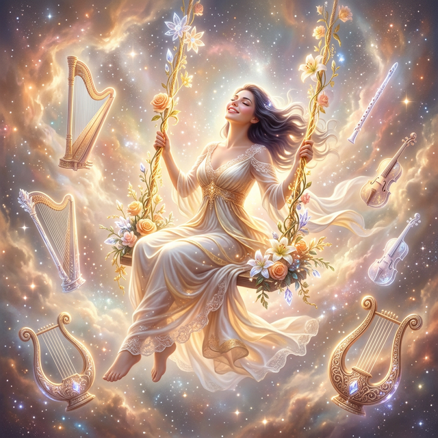
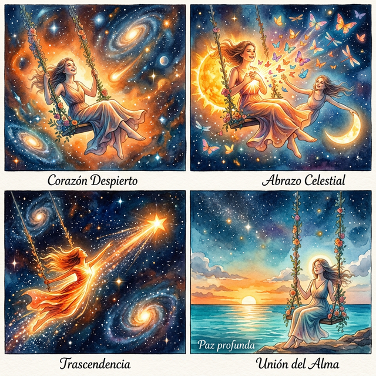
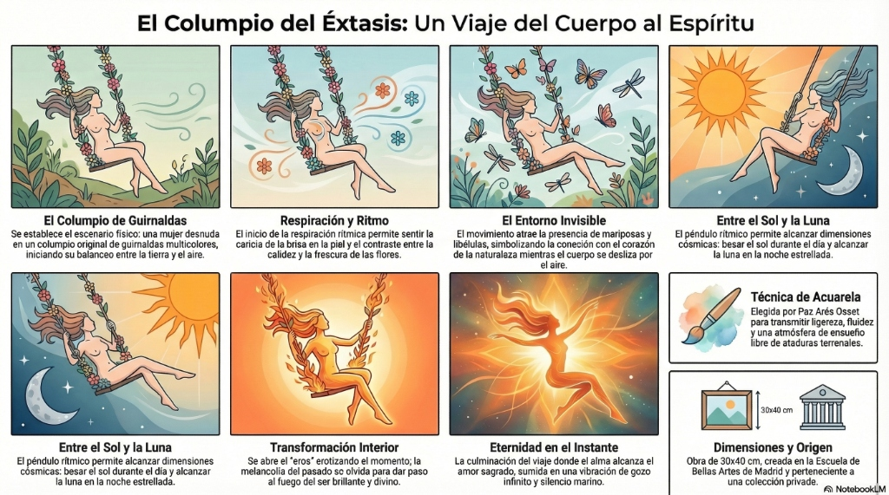
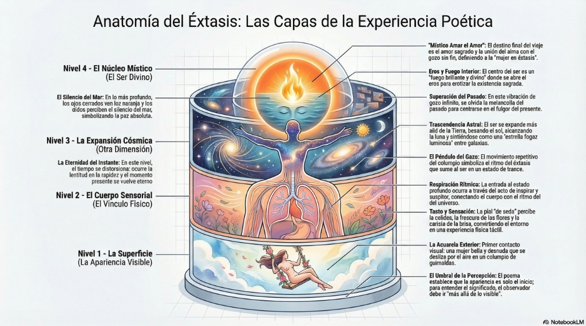

El Columpio del Éxtasis
The Swing of Ecstasy
L'Altalena dell'Estasi
狂喜的秋千
أرجوحة النشوة
Качели Экстаза
Die Schaukel der Ekstase
L'Escarpolette de l'Extase
恍惚のブランコ
O Balanço do Êxtase
Гойдалка екстазу
Un viaje místico hacia el gozo y el amor cósmico.
A mystical journey into joy and cosmic love.
Un viaggio mistico nella gioia e nell'amore cosmico.
通往喜悦与宇宙之爱的神秘旅程。
رحلة صوفية نحو الفرح والحب الكوني.
Мистическое путешествие к радости и космической любви.
Eine mystische Reise in die Freude und die kosmische Liebe.
Un voyage mystique dans la joie et l'amour cosmique.
歓喜と宇宙の愛への神秘的な旅。
Uma viagem mística à alegria e ao amor cósmico.
Містична подорож до радості та космічної любові.
El Columpio del Éxtasis
En la acuarela tú puedes solo ver la apariencia...
Una mujer desnuda y bella
Deslizándose por el aire, con sus cabellos al viento
En un original columpio de guirnaldas multicolores...
Una mujer desnuda y bella
Deslizándose por el aire, con sus cabellos al viento
En un original columpio de guirnaldas multicolores...
Yendo más allá de lo visible,
descubres el interior invisible.
descubres el interior invisible.
Me columpio en amor.
Me deslizo entre las flores de colores…
Rítmicamente respirando,
sintiendo su calidez y frescura...
Me deslizo entre las flores de colores…
Rítmicamente respirando,
sintiendo su calidez y frescura...
La caricia de la brisa
en la suavidad de mi piel de seda...
Sumida en el gozo del éxtasis...
En el péndulo rítmico y repetitivo...
en la suavidad de mi piel de seda...
Sumida en el gozo del éxtasis...
En el péndulo rítmico y repetitivo...
Entre el baile de flores, mariposas
y libélulas en corazón...
En el que beso el sol en el radiante día.
En el que alcanzamos la luna en la noche estrellada.
y libélulas en corazón...
En el que beso el sol en el radiante día.
En el que alcanzamos la luna en la noche estrellada.
Inspiro y suspiro.
Entro en otra dimensión.
En la vibración del gozo infinito
En la eternidad del instante.
Entro en otra dimensión.
En la vibración del gozo infinito
En la eternidad del instante.
Donde sucede la lentitud en la rapidez...
Me siento una estrella fugaz luminosa...
Inspiro y suspiro.
Se abre mi eros erotizando el momento...
Me siento una estrella fugaz luminosa...
Inspiro y suspiro.
Se abre mi eros erotizando el momento...
Olvido el pasado de melancolía.
Todo es fulgor del fuego de mi ser brillante y divino...
Rebosando pasión entre las galaxias.
Todo es luz de color naranja en mis ojos cerrados.
Todo es fulgor del fuego de mi ser brillante y divino...
Rebosando pasión entre las galaxias.
Todo es luz de color naranja en mis ojos cerrados.
En los oídos el silencio del mar...
Y mi alma llega al místico amar el amor...
Amor de poesía...
Y mi alma llega al místico amar el amor...
Amor de poesía...
Amor divino y sagrado.
Intensidad, eternidad y gozo sin fin.
Es la mujer en gozo.
Soy la mujer en éxtasis.
Intensidad, eternidad y gozo sin fin.
Es la mujer en gozo.
Soy la mujer en éxtasis.
The Swing of Ecstasy
In the watercolor you can only see the appearance...
A beautiful naked woman
Sliding through the air, with her hair in the wind
On an original swing of multicolored garlands...
A beautiful naked woman
Sliding through the air, with her hair in the wind
On an original swing of multicolored garlands...
Going beyond the visible,
you discover the invisible interior.
you discover the invisible interior.
I swing in love.
I slide among the colorful flowers…
Rhythmically breathing,
feeling its warmth and freshness...
I slide among the colorful flowers…
Rhythmically breathing,
feeling its warmth and freshness...
The caress of the breeze
on the softness of my silky skin...
Submerged in the joy of ecstasy...
In the rhythmic and repetitive pendulum...
on the softness of my silky skin...
Submerged in the joy of ecstasy...
In the rhythmic and repetitive pendulum...
Among the dance of flowers, butterflies
and dragonflies in heart...
In which I kiss the sun on the radiant day.
In which I reach the moon on the starry night.
and dragonflies in heart...
In which I kiss the sun on the radiant day.
In which I reach the moon on the starry night.
I inhale and sigh.
I enter another dimension.
In the vibration of infinite joy
In the eternity of the moment.
I enter another dimension.
In the vibration of infinite joy
In the eternity of the moment.
Where slowness happens in speed...
I feel like a luminous shooting star...
I inhale and sigh.
My eros opens erotizing the moment...
I feel like a luminous shooting star...
I inhale and sigh.
My eros opens erotizing the moment...
I forget the past of melancholy.
Everything is the glow of the fire of my brilliant and divine being...
Overflowing with passion among the galaxies.
Everything is orange light in my closed eyes.
Everything is the glow of the fire of my brilliant and divine being...
Overflowing with passion among the galaxies.
Everything is orange light in my closed eyes.
In the ears the silence of the sea...
And my soul reaches the mystic loving of love...
Love of poetry...
And my soul reaches the mystic loving of love...
Love of poetry...
Divine and sacred love.
Intensity, eternity and endless joy.
It is the woman in joy.
I am the woman in ecstasy.
Intensity, eternity and endless joy.
It is the woman in joy.
I am the woman in ecstasy.
L'Altalena dell'Estasi
Nell'acquerello puoi solo vedere l'apparenza...
Una donna nuda e bella
Scivolando per l'aria, con i capelli al vento
Su un'altalena originale di ghirlande multicolori...
Una donna nuda e bella
Scivolando per l'aria, con i capelli al vento
Su un'altalena originale di ghirlande multicolori...
Andando oltre il visibile,
scopri l'interno invisibile.
scopri l'interno invisibile.
Mi altaleno nell'amore.
Scivolo tra i fiori colorati…
Respirando ritmicamente,
sentendo il suo calore e freschezza...
Scivolo tra i fiori colorati…
Respirando ritmicamente,
sentendo il suo calore e freschezza...
La carezza della brezza
sulla morbidezza della mia pelle di seta...
Immersa nella gioia dell'estasi...
Nel pendolo ritmico e repetitivo...
sulla morbidezza della mia pelle di seta...
Immersa nella gioia dell'estasi...
Nel pendolo ritmico e repetitivo...
Tra la danza di fiori, farfalle
e libellule nel cuore...
In cui bacio il sole nel giorno radioso.
In cui raggiungo la luna nella notte stellata.
e libellule nel cuore...
In cui bacio il sole nel giorno radioso.
In cui raggiungo la luna nella notte stellata.
Inspiro e sospiro.
Entro in un'altra dimensione.
Nella vibrazione della gioia infinita
Nell'eternità dell'istante.
Entro in un'altra dimensione.
Nella vibrazione della gioia infinita
Nell'eternità dell'istante.
Dove la lentezza accade nella velocità...
Mi sento una stella cadente luminosa...
Inspiro e sospiro.
Il mio eros si apre erotizzando il momento...
Mi sento una stella cadente luminosa...
Inspiro e sospiro.
Il mio eros si apre erotizzando il momento...
Dimentico il passato di malinconia.
Tutto è splendore del fuoco del mio essere brillante e divino...
Traboccante di passione tra le galassie.
Tutto è luce arancione nei miei occhi chiusi.
Tutto è splendore del fuoco del mio essere brillante e divino...
Traboccante di passione tra le galassie.
Tutto è luce arancione nei miei occhi chiusi.
Nelle orecchie il silenzio del mare...
E la mia anima raggiunge il mistico amare l'amore...
Amore di poesia...
E la mia anima raggiunge il mistico amare l'amore...
Amore di poesia...
Amore divino e sacro.
Intensità, eternità e gioia senza fine.
È la donna nella gioia.
Sono la donna in estasi.
Intensità, eternità e gioia senza fine.
È la donna nella gioia.
Sono la donna in estasi.
狂喜的秋千
在水彩画中，你只能看到外表……
一位美丽而赤裸的女性
在空中滑行，发丝随风飘扬
在一个绚丽花环组成的独特秋千上……
一位美丽而赤裸的女性
在空中滑行，发丝随风飘扬
在一个绚丽花环组成的独特秋千上……
超越可见的一切，
你发现了不可见的内在。
你发现了不可见的内在。
我在爱中荡漾。
我在彩花间滑行……
律动地呼吸，
感受它的温暖与清新……
我在彩花间滑行……
律动地呼吸，
感受它的温暖与清新……
微风的爱抚
在我丝滑柔嫩的皮肤上……
沉浸在狂喜的愉悦中……
在有节奏的、重复的摆动中……
在我丝滑柔嫩的皮肤上……
沉浸在狂喜的愉悦中……
在有节奏的、重复的摆动中……
在花朵、蝴蝶与
心中的蜻蜓共舞之间……
在灿烂的日子里吻过太阳，
在繁星点点的夜晚触及月亮。
心中的蜻蜓共舞之间……
在灿烂的日子里吻过太阳，
在繁星点点的夜晚触及月亮。
我吸气并叹息。
我进入了另一个维度。
在无限喜悦的振动中，
在瞬间的永恒中。
我进入了另一个维度。
在无限喜悦的振动中，
在瞬间的永恒中。
当缓慢在极速中发生……
我感觉自己像一颗明亮的流星……
我吸气并叹息。
我的欲望开启，让此刻充满了诗意的情色……
我感觉自己像一颗明亮的流星……
我吸气并叹息。
我的欲望开启，让此刻充满了诗意的情色……
我忘记了忧郁的过去。
一切都是我光辉而神圣存在的烈焰……
在星系间洋溢着激情。
闭上双眼，一切都是橙色的光芒。
一切都是我光辉而神圣存在的烈焰……
在星系间洋溢着激情。
闭上双眼，一切都是橙色的光芒。
耳畔是海洋的寂静……
我的灵魂到达了神秘的爱之爱……
诗歌之爱……
我的灵魂到达了神秘的爱之爱……
诗歌之爱……
神圣而崇高的爱。
强度、永恒与无尽的喜悦。
这是愉悦中的女人。
我是狂喜中的女人。
强度、永恒与无尽的喜悦。
这是愉悦中的女人。
我是狂喜中的女人。
أرجوحة النشوة
في الألوان المائية، يمكنك فقط رؤية المظهر...
امرأة جميلة وعارية
تنزلق في الهواء، وشعرها يتطاير في الريح
على أرجوحة فريدة من أكاليل الزهور الملونة...
امرأة جميلة وعارية
تنزلق في الهواء، وشعرها يتطاير في الريح
على أرجوحة فريدة من أكاليل الزهور الملونة...
بالذهاب إلى ما وراء المرئي،
تكتشف الداخل غير المرئي.
تكتشف الداخل غير المرئي.
أتأرجح في الحب.
أنزلق بين الزهور الملونة…
أتنفس بإيقاع،
أشعر بدفئها ونضارتها...
أنزلق بين الزهور الملونة…
أتنفس بإيقاع،
أشعر بدفئها ونضارتها...
لمسة النسيم
على نعومة بشرتي الحريرية...
منغمسة في غبطة النشوة...
في البندول الإيقاعي والمتكرر...
على نعومة بشرتي الحريرية...
منغمسة في غبطة النشوة...
في البندول الإيقاعي والمتكرر...
بين رقصة الزهور، الفراشات
واليعاسيب في القلب...
حيث أقبل الشمس في اليوم المشرق.
وحيث أصل إلى القمر في الليلة المرصعة بالنجوم.
واليعاسيب في القلب...
حيث أقبل الشمس في اليوم المشرق.
وحيث أصل إلى القمر في الليلة المرصعة بالنجوم.
أستنشق وأتنهد.
أدخل في بُعد آخر.
في اهتزاز الفرح اللامتناهي
في أبدية اللحظة.
أدخل في بُعد آخر.
في اهتزاز الفرح اللامتناهي
في أبدية اللحظة.
حيث يحدث البطء في السرعة...
أشعر وكأني شهاب مضيء...
أستنشق وأتنهد.
فتح إيروسي مثيراً اللحظة...
أشعر وكأني شهاب مضيء...
أستنشق وأتنهد.
فتح إيروسي مثيراً اللحظة...
أنسى ماضي الكآبة.
كل شيء هو وهج نار كياني اللامع والإلهي...
يفيض بالشغف بين المجرات.
كل شيء ضوء برتقالي في عيني المغلقتين.
كل شيء هو وهج نار كياني اللامع والإلهي...
يفيض بالشغف بين المجرات.
كل شيء ضوء برتقالي في عيني المغلقتين.
في الأذنين صمت البحر...
وتصل روحي إلى الحب الصوفي للحب...
حب الشعر...
وتصل روحي إلى الحب الصوفي للحب...
حب الشعر...
حب إلهي ومقدس.
كثافة، أبدية وفرح بلا نهاية.
هي المرأة في غبطة.
أنا المرأة في نشوة.
كثافة، أبدية وفرح بلا نهاية.
هي المرأة في غبطة.
أنا المرأة في نشوة.
Качели Экстаза
В акварели ты видишь лишь видимость...
Прекрасная обнаженная женщина
Скользит в воздухе, волосы по ветру
На оригинальных качелях из многоцветных гирлянд...
Прекрасная обнаженная женщина
Скользит в воздухе, волосы по ветру
На оригинальных качелях из многоцветных гирлянд...
Идя дальше видимого,
ты открываешь невидимое нутро.
ты открываешь невидимое нутро.
Я качаюсь в любви.
Я скольжу среди цветных цветов…
Ритмично дыша,
ощущая их тепло и свежесть...
Я скольжу среди цветных цветов…
Ритмично дыша,
ощущая их тепло и свежесть...
Ласка бриза
на мягкости моей шелковой кожи...
Погруженная в радость экстаза...
В ритмичном и повторяющемся маятнике...
на мягкости моей шелковой кожи...
Погруженная в радость экстаза...
В ритмичном и повторяющемся маятнике...
Среди танца цветов, бабочек
и стрекоз в сердце...
В котором я целую солнце в сияющий день.
В котором я достигаю луны в звездную ночь.
и стрекоз в сердце...
В котором я целую солнце в сияющий день.
В котором я достигаю луны в звездную ночь.
Вдох и вздох.
Я вхожу в другое измерение.
В вибрации бесконечной радости
В вечности мгновения.
Я вхожу в другое измерение.
В вибрации бесконечной радости
В вечности мгновения.
Где медлительность случается в скорости...
Я чувствую себя яркой падающей звездой...
Вдох и вздох.
Мой эрос открывается, эротизируя момент...
Я чувствую себя яркой падающей звездой...
Вдох и вздох.
Мой эрос открывается, эротизируя момент...
Я забываю прошлое меланхолии.
Все есть сияние огня моего блестящего и божественного существа...
Переполненная страстью среди галактик.
Все есть оранжевый свет в моих закрытых глазах.
Все есть сияние огня моего блестящего и божественного существа...
Переполненная страстью среди галактик.
Все есть оранжевый свет в моих закрытых глазах.
В ушах тишина моря...
И моя душа достигает мистической любви к любви...
Любви к поэзии...
И моя душа достигает мистической любви к любви...
Любви к поэзии...
Божественная и священная любовь.
Интенсивность, вечность и бесконечная радость.
Это женщина в радости.
Я — женщина в экстазе.
Интенсивность, вечность и бесконечная радость.
Это женщина в радости.
Я — женщина в экстазе.
Die Schaukel der Ekstase
Im Aquarell kannst du nur den Anschein sehen...
Eine wunderschöne nackte Frau
Gleitet durch die Luft, das Haar im Wind
Auf einer originellen Schaukel aus bunten Girlanden...
Eine wunderschöne nackte Frau
Gleitet durch die Luft, das Haar im Wind
Auf einer originellen Schaukel aus bunten Girlanden...
Jenseits des Sichtbaren
entdeckst du das unsichtbare Innere.
entdeckst du das unsichtbare Innere.
Ich schaukle in Liebe.
Ich gleite zwischen den bunten Blumen…
Rhythmisch atmend,
fühle ihre Wärme und Frische...
Ich gleite zwischen den bunten Blumen…
Rhythmisch atmend,
fühle ihre Wärme und Frische...
Das Liebkoisen der Brise
auf der Sanftheit meiner seidenen Haut...
Versunken in der Freude der Ekstase...
Im rhythmischen und repetitiven Pendel...
auf der Sanftheit meiner seidenen Haut...
Versunken in der Freude der Ekstase...
Im rhythmischen und repetitiven Pendel...
Zwischen dem Tanz von Blumen, Schmetterlingen
und Libellen im Herzen...
In dem ich die Sonne am strahlenden Tag küsse.
In dem ich den Mond in der Sternennacht erreiche.
und Libellen im Herzen...
In dem ich die Sonne am strahlenden Tag küsse.
In dem ich den Mond in der Sternennacht erreiche.
Ich atme ein und seufze.
Ich betrete eine andere Dimension.
In der Schwingung unendlicher Freude
In der Ewigkeit des Augenblicks.
Ich betrete eine andere Dimension.
In der Schwingung unendlicher Freude
In der Ewigkeit des Augenblicks.
Wo die Langsamkeit in der Schnelligkeit geschieht...
Ich fühle mich wie eine leuchtende Sternschnuppe...
Ich atme ein und seufze.
Mein Eros öffnet sich und erotisiert den Moment...
Ich fühle mich wie eine leuchtende Sternschnuppe...
Ich atme ein und seufze.
Mein Eros öffnet sich und erotisiert den Moment...
Ich vergesse die Vergangenheit der Melancholie.
Alles ist der Glanz des Feuers meines brillanten und göttlichen Seins...
Überfließend vor Leidenschaft zwischen den Galaxien.
Alles ist orangefarbenes Licht in meinen geschlossenen Augen.
Alles ist der Glanz des Feuers meines brillanten und göttlichen Seins...
Überfließend vor Leidenschaft zwischen den Galaxien.
Alles ist orangefarbenes Licht in meinen geschlossenen Augen.
In den Ohren die Stille des Meeres...
Und meine Seele erreicht das mystische Lieben der Liebe...
Liebe zur Poesie...
Und meine Seele erreicht das mystische Lieben der Liebe...
Liebe zur Poesie...
Göttliche und heilige Liebe.
Intensität, Ewigkeit und endlose Freude.
Es ist die Frau in der Freude.
Ich bin die Frau in Ekstase.
Intensität, Ewigkeit und endlose Freude.
Es ist die Frau in der Freude.
Ich bin die Frau in Ekstase.
L'Escarpolette de l'Extase
Dans l’aquarelle, tu ne peux voir que l’apparence...
Une femme nue et belle
Glissant dans les airs, les cheveux au vent
Sur une balançoire originale de guirlandes multicolores...
Une femme nue et belle
Glissant dans les airs, les cheveux au vent
Sur une balançoire originale de guirlandes multicolores...
En allant au-delà du visible,
tu découvres l’intérieur invisible.
tu découvres l’intérieur invisible.
Je me balance en amour.
Je glisse parmi les fleurs colorées…
Respirant rythmiquement,
sentant leur chaleur et leur fraîcheur...
Je glisse parmi les fleurs colorées…
Respirant rythmiquement,
sentant leur chaleur et leur fraîcheur...
La caresse de la brise
sur la douceur de ma peau de soie...
Plongée dans la joie de l’extase...
Dans le pendule rythmique et répétitif...
sur la douceur de ma peau de soie...
Plongée dans la joie de l’extase...
Dans le pendule rythmique et répétitif...
Parmi la danse des fleurs, des papillons
et des libellules dans le cœur...
Où j'embrasse le soleil par un jour radieux.
Où j'atteins la lune dans la nuit étoilée.
et des libellules dans le cœur...
Où j'embrasse le soleil par un jour radieux.
Où j'atteins la lune dans la nuit étoilée.
J'inspire et je soupire.
J'entre dans une autre dimension.
Dans la vibration de la joie infinie
Dans l'éternité de l'instant.
J'entre dans une autre dimension.
Dans la vibration de la joie infinie
Dans l'éternité de l'instant.
Où la lenteur se produit dans la rapidité...
Je me sens comme une étoile filante lumineuse...
J'inspire et je soupire.
Mon éros s'ouvre en érotisant le moment...
Je me sens comme une étoile filante lumineuse...
J'inspire et je soupire.
Mon éros s'ouvre en érotisant le moment...
J'oublie le passé de mélancolie.
Tout est l’éclat du feu de mon être brillant et divin...
Débordant de passion parmi les galaxies.
Tout n'est que lumière orangée dans mes yeux clos.
Tout est l’éclat du feu de mon être brillant et divin...
Débordant de passion parmi les galaxies.
Tout n'est que lumière orangée dans mes yeux clos.
Dans les oreilles, le silence de la mer...
Et mon âme atteint le mystique aimer l’amour...
Amour de poésie...
Et mon âme atteint le mystique aimer l’amour...
Amour de poésie...
Amour divin et sacré.
Intensité, éternité et joie sans fin.
C'est la femme dans la joie.
Je suis la femme en extase.
Intensité, éternité et joie sans fin.
C'est la femme dans la joie.
Je suis la femme en extase.
恍惚のブランコ
水彩画の中で、あなたに読み取れるのは外見だけ……
若く美しい一人の裸婦
風に髪をなびかせ、空を滑るように舞う
色とりどりの花輪に彩られた、独創的なブランコに乗って……
若く美しい一人の裸婦
風に髪をなびかせ、空を滑るように舞う
色とりどりの花輪に彩られた、独創的なブランコに乗って……
目に見える境界を越えたとき、
あなたは見えない内なる世界を発見する。
あなたは見えない内なる世界を発見する。
私は愛の中で揺れる。
色彩豊かな花々の間を滑り抜ける……
リズムを刻む吸息と吐息、
その温もりと清々しさを感じながら……
色彩豊かな花々の間を滑り抜ける……
リズムを刻む吸息と吐息、
その温もりと清々しさを感じながら……
絹のような肌の柔らかさを撫でる
そよ風の愛撫……
恍惚の歓喜に深く沈み込み……
リズミカルに繰り返される振り子の中で……
そよ風の愛撫……
恍惚の歓喜に深く沈み込み……
リズミカルに繰り返される振り子の中で……
花々と蝶、そして心躍る
蜻蛉たちが舞い踊る中で……
輝く昼には太陽に接吻し、
星降る夜には月にまで届く。
蜻蛉たちが舞い踊る中で……
輝く昼には太陽に接吻し、
星降る夜には月にまで届く。
息を吸い、そして溜息を漏らす。
私は別の次元へと足を踏み入れる。
無限の歓喜という鼓動の中で、
この瞬間の永劫の中で。
私は別の次元へと足を踏み入れる。
無限の歓喜という鼓動の中で、
この瞬間の永劫の中で。
速さの中に静寂が宿るとき……
私は光り輝く流れ星になったような心地がする……
息を吸い、そして溜息を漏らす。
私のエロスが開花し、この瞬間を官能で満たしていく……
私は光り輝く流れ星になったような心地がする……
息を吸い、そして溜息を漏らす。
私のエロスが開花し、この瞬間を官能で満たしていく……
憂鬱な過去は忘れ去った。
すべては、輝かしく神聖な私の存在が放つ炎の煌めき……
銀河の間で溢れ出す情熱。
閉じた瞳の裏側には、ただオレンジ色の光が満ちている。
すべては、輝かしく神聖な私の存在が放つ炎の煌めき……
銀河の間で溢れ出す情熱。
閉じた瞳の裏側には、ただオレンジ色の光が満ちている。
耳の奥には、海の静寂が響き……
私の魂は、神秘的な「愛を愛すること」へと至る……
詩という名の愛へ……
私の魂は、神秘的な「愛を愛すること」へと至る……
詩という名の愛へ……
神聖で気高い愛。
その激しさ、永遠、そして終わることのない喜び。
それは歓喜に包まれた女。
私は恍惚の中に生きる女。
その激しさ、永遠、そして終わることのない喜び。
それは歓喜に包まれた女。
私は恍惚の中に生きる女。
O Balanço do Êxtase
Na aquarela você pode apenas ver a aparência...
Uma mulher nua e bela
Deslizando pelo ar, com os cabelos ao vento
Num balanço original de guirlandas multicoloridas...
Uma mulher nua e bela
Deslizando pelo ar, com os cabelos ao vento
Num balanço original de guirlandas multicoloridas...
Indo além do visível,
descobres o interior invisível.
descobres o interior invisível.
Balanço em amor.
Deslizo entre as flores coloridas…
Ritmicamente respirando,
sentindo seu calor e frescor...
Deslizo entre as flores coloridas…
Ritmicamente respirando,
sentindo seu calor e frescor...
A carícia da brisa
na suavidade da minha pele de seda...
Mergulhada no gozo do êxtase...
No pêndulo rítmico e repetitivo...
na suavidade da minha pele de seda...
Mergulhada no gozo do êxtase...
No pêndulo rítmico e repetitivo...
Entre a dança de flores, borboletas
e libélulas no coração...
Em que beijo o sol no dia radiante.
Em que alcanço a lua na noite estrellada.
e libélulas no coração...
Em que beijo o sol no dia radiante.
Em que alcanço a lua na noite estrellada.
Inspiro e suspiro.
Entro em outra dimensão.
Na vibração do gozo infinito
Na eternidade do instante.
Entro em outra dimensão.
Na vibração do gozo infinito
Na eternidade do instante.
Onde a lentidão acontece na rapidez...
Sinto-me uma estrela cadente luminosa...
Inspiro e suspiro.
Abre-se o meu eros erotizando o momento...
Sinto-me uma estrela cadente luminosa...
Inspiro e suspiro.
Abre-se o meu eros erotizando o momento...
Esqueço o passado de melancolia.
Tudo é fulgor do fogo do meu ser brilhante e divino...
Transbordando paixão entre as galáxias.
Tudo é luz de cor laranja nos meus olhos fechados.
Tudo é fulgor do fogo do meu ser brilhante e divino...
Transbordando paixão entre as galáxias.
Tudo é luz de cor laranja nos meus olhos fechados.
Nos ouvidos o silêncio do mar...
E minha alma chega ao místico amar o amor...
Amor de poesia...
E minha alma chega ao místico amar o amor...
Amor de poesia...
Amor divino e sagrado.
Intensidade, eternidade e gozo sem fin.
É a mulher no gozo.
Sou a mulher em êxtase.
Intensidade, eternidade e gozo sem fin.
É a mulher no gozo.
Sou a mulher em êxtase.
Гойдалка екстазу
На акварелі ти бачиш лише видимість...
Красива оголена жінка
Ковзає в повітрі, волосся за вітром
На оригінальній гойдалці з різнокольорових гірлянд...
Красива оголена жінка
Ковзає в повітрі, волосся за вітром
На оригінальній гойдалці з різнокольорових гірлянд...
Виходячи за межі видимого,
ти відкриваєш невидиме нутро.
ти відкриваєш невидиме нутро.
Я гойдаюся в коханні.
Я ковзаю серед кольорових квітів…
Ритмічно дихаючи,
відчуваючи їхнє тепло і свіжість...
Я ковзаю серед кольорових квітів…
Ритмічно дихаючи,
відчуваючи їхнє тепло і свіжість...
Ласка бризу
на м'якості моєї шовкової шкіри...
Занурена в радість екстазу...
У ритмічному і повторюваному маятнику...
на м'якості моєї шовкової шкіри...
Занурена в радість екстазу...
У ритмічному і повторюваному маятнику...
Серед танцю квітів, метеликів
і бабок у серці...
У якому я цілую сонце в сяючий день.
У якому ми сягаємо місяця в зоряну ніч.
і бабок у серці...
У якому я цілую сонце в сяючий день.
У якому ми сягаємо місяця в зоряну ніч.
Вдихаю і зітхаю.
Я входжу в інший вимір.
У вібрації нескінченної радості
В вічності миті.
Я входжу в інший вимір.
У вібрації нескінченної радості
В вічності миті.
Де повільність трапляється у швидкості...
Я відчуваю себе яскравою падаючою зіркою...
Вдихаю і зітхаю.
Мій ерос відкривається, еротизуючи момент...
Я відчуваю себе яскравою падаючою зіркою...
Вдихаю і зітхаю.
Мій ерос відкривається, еротизуючи момент...
Я забуваю минуле меланхолії.
Все є сяйвом вогню мого блискучого і божественного єства...
Переповнена пристрастю серед галактик.
Все є помаранчевим світлом у моїх закритих очах.
Все є сяйвом вогню мого блискучого і божественного єства...
Переповнена пристрастю серед галактик.
Все є помаранчевим світлом у моїх закритих очах.
У вухах тиша моря...
І моя душа досягає містичної любові до любові...
Любов поезії...
І моя душа досягає містичної любові до любові...
Любов поезії...
Божественна і священна любов.
Інтенсивність, вічність і безкінечна радість.
Це жінка в радості.
Я жінка в екстазі.
Інтенсивність, вічність і безкінечна радість.
Це жінка в радості.
Я жінка в екстазі.
Canciones del Poema Poem Songs Canzoni della Poesia 诗歌歌曲 أغاني القصيدة Песни на стихотворение Gedicht Lieder Chansons du Poème 詩の歌 Canções do Poema Пісні до вірша
Sumérgete en la vibración sonora del éxtasis.
Inspiración en Video Video Inspiration Ispirazione in Video 视频灵感 إلهام الفيديو Видео вдохновение Video-Inspiration Inspiration vidéo 動画インスピレーション Inspiração em Vídeo Відео натхнення
Canciones del Poema

Versión Celestial
Paz Arés Osset
Arpas, Liras y Flautas
Nueva Inspiración
Descubre las versiones musicales de este poema en tu idioma. Recitaciones mágicas unidas a ritmos electrónicos.

El Poema en Imágenes The Poem in Images Il Poema in Immagini 图片中的诗 القصيدة في صور Стихотворение в картинках Das Gedicht in Bildern Le poème en images 画像で見る詩 O Poema em Imagens

Infografías del Éxtasis

Un Viaje del Cuerpo al Espíritu
Haz clic para ampliar

Anatomía del Éxtasis: Capas de la Experiencia
Haz clic para ampliar